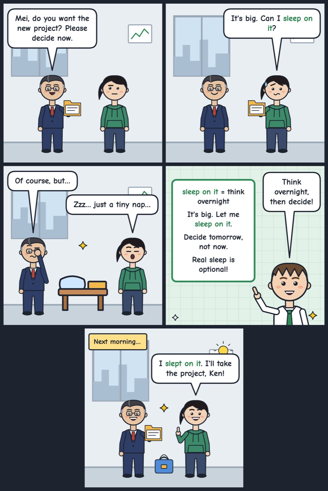

sleep on it
To wait until the next day to decide something.
It's a big decision. Let me sleep on it and tell you tomorrow.
Tip: Use it as 'sleep on it' (not 'sleep on the decision'); people often say 'Let me sleep on it' or 'I'll sleep on it' when they don't want to answer straight away.
Hear it in conversation
Workbook
1. What does it mean?
In this conversation, what does "sleep on it" mean?
2. Fill the gap
I'm not sure which course to pick, so I'm going to and email you in the morning.
3. Choose the best reply
Amira: The company needs to know by Monday if you'll accept the job offer. What do you think?
4. Your turn: speak
Tell me about a time you had to make an important decision. How did you decide?
Show an example answer
Last year I was offered a job in another city, and I wasn't sure what to do. I told my manager I'd sleep on it, and I also talked to my family. The next morning I felt much clearer, so I decided to stay.
Answer key: sleep on it
- 1. B. Take more time, usually until the next day, before deciding
- 2. sleep on it
- 3. C. It's tempting. Can I sleep on it over the weekend?
- 4. Example: Last year I was offered a job in another city, and I wasn't sure what to do. I told my manager I'd sleep on it, and I also talked to my family. The next morning I felt much clearer, so I decided to stay.
See it in a comic
